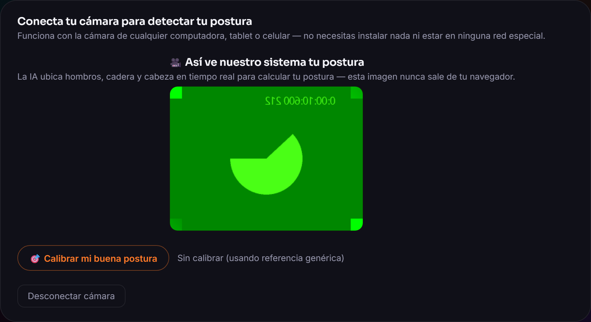

1
📷 Conecta tu cámara — y la IA la entiende al instante
Un clic en "Activar cámara" pide permiso al navegador (getUserMedia) — funciona en cualquier computadora, tablet o celular, sin instalar nada ni redes especiales. De inmediato, un modelo de Inteligencia Artificial (MediaPipe Pose, de Google) ubica 33 puntos de tu cuerpo, cuadro a cuadro, completamente dentro del navegador.
Detalle técnico: usamos
modelComplexity: 0 ("Lite") en vez de la versión más precisa — en computadoras con tarjeta gráfica modesta (como las del colegio), el modelo "Full" llegaba a congelar la máquina entera. La versión Lite es más liviana y sigue siendo suficiente para las 3 señales que de verdad usamos: hombros, cadera y cabeza.
